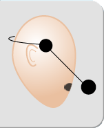

As pictured, place the microphone strap on your head with the boom on your right side. Make sure that the pads are on your temples and not covering your ears. Ensure that the boom is straight and that the microphone is level and two finger’s width away from the right corner of your mouth.